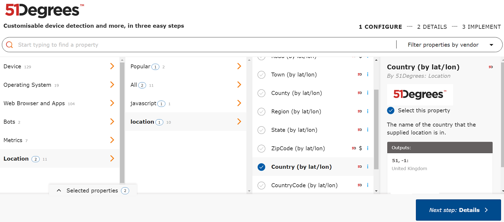
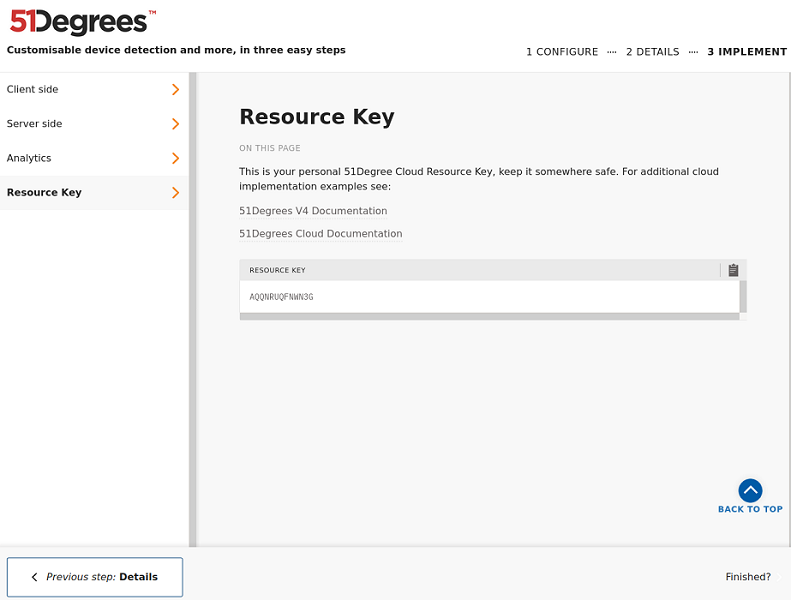

Obtaining a Resource Key🔗
Access to API queries is controlled by a Resource Key, which is obtained from the Cloud Configurator.
When a Resource Key is created, you choose the properties that it will return from queries, and once these are set they cannot be changed. However, it is possible to create more keys, each tied to whichever properties you choose.
For a comprehensive list of all available properties and their descriptions, see the Property Dictionary.
Step 1: Choose properties🔗
To obtain a Resource Key, visit the Cloud Configurator. This will show the complete list of properties, broken down by category and by vendor. Choose whichever properties you need for the query you are planning.
For example, if you intend to look up latitude and longitude data to get a country, using 51Degrees as the vendor, then in the Configurator you can find the Country property by choosing Location on the left, then location again, then ticking Country with the 51D logo. Clicking on that Country key shows a description: "Country By 51Degrees: The name of the country that the supplied location is in." Descriptions are there to help you understand what each property means and whether you want to include it in your queries.

You should choose as many properties as you need here; once the Resource Key is generated, its list of permitted properties cannot be changed.
Step 2: Review Configuration🔗
Some properties require a subscription to appear in query results, or for queries over a certain quota. The Review Configuration screen will inform you if a subscription License Key is required and allow you to secure your properties to specific domains, register for product updates, attach your new Resource Key to a subscription, and read and agree to the terms and conditions.
Step 3: Implement🔗
Finally your newly created Resource Key is available. The Implement screen shows code examples much like this documentation but with your new Resource Key in place, and allows you to copy the Resource Key itself from the Resource Key section. It is important that you record the Resource Key somewhere at this point; it is not possible to see a list of Resource Keys attached to an account, so once you have left Step 3 you cannot return to it.

Follow these three steps by visiting the configurator at configure.51degrees.com and obtaining a Resource Key from the Resource Key section in Step 3.
Make a note of that Resource Key and then continue following the introduction.
Displaying details for an existing Resource Key🔗
If you have a Resource Key and need to establish which properties it has access to, you can construct a URL https://configure.51degrees.com/YOUR_RESOURCE_KEY. This will show Step 1 of the Configurator with the properties for this specific key already selected.
Beware: do not continue to Steps 2 or 3. Doing this will not edit the properties attached to your Resource Key, since Resource Keys are immutable; instead, it wil create a new Resource Key.